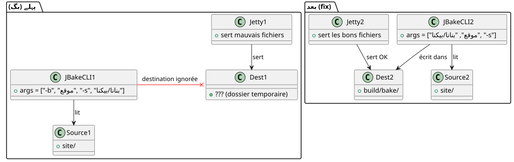

کیوں `serve` ایک بدصورت سائٹ دکھا رہا تھا جبکہ `publishSite` بالکل ٹھیک تھا
شائع شدہ: 22 April 2026
کیا آپ وہ لحظة جانتے ہیں جہاں آپ کا لوکل سایت کچھ نہیں دکھاتا، لیکن آن لائن ڈپلوي کرنے کے بعد سب کچھ بہتر ہو جاتا ہے؟ یہ وہ چیز ہے جو میرے Gradle JBake پلاگ کے ساتھ واقع ہوئی۔ کام`serve`چوکور بٹن دکھائے جا رہے تھے، سیاہ پس منظر پر سیاہ متن، اور عجیب طور سے غائب CSS۔ لیکن`publishSite`وہ ایک ہی سائیٹ بناتا تھا، وہ، بے عیب۔ مجرم سی ایس ایس، براؤزر، یا کیش میں سے کوئی نہیں تھا۔ یہ ایک لائن کوٹلن کوڈ تھا — اور کمانڈ لائن آرگیمنٹس کے ساتھ ایک برائی عادت۔
- ٹک
-
[]
سین : چار اسکرین شاٹس، دو رینڈرز
یہ سسٹم کرش کے بعد تھا۔ میں نے چار اسکرین شاٹس ليے لوکل رینڈر کا موازنہ کرنے کے لیے (./gradlew serve`پر`localhost:8820) ان لائن رینڈرنگ کے ساتھ (`publishSite`پر GitHub Pages). دو screenshots ہر صفحہ : اوپر اور نیچے.
مقامی رینڈر
صفحے کا سر— بٹن Project اور Template ہیںچھوٹے, مستطیل, معيارے رنگوں (نیلا اور سبز). Start Writing کارڈ کے پاس ایکسیاہ پلین پس منظر, بינה فریم.

فلتزر— عنوان فرعی "آخری مضامین اور وسائل" ہےکم پڑھنے کے قابل, سیاہ پس منظر پر بہت gehra. بلوگ تصاویر کے نیچے کی تاریخیں (مثلاً '17 October 2013') ہیںغائبات.

آن لائن رینڈر
صفحے کا اوپر— وہ ہی بٹن ہیںبڑے، بھیڑ سے متعلق، چمک دار نیوں سبز, بڑے حروف کا متن. کارڈ کے پاس ایکسفید گولے دار فریم ڈراپ شادو کے ساتھ.

پایین صفحہ— سب ٹائٹل ہےبہت پڑھنے کے قابل. تاریخیں ہیںناظرانہ. مضامین کے کارڈز میںگل کونےاور عنوانات ہیںبولد میں.

پہلا ردعمل: موضوع. میں ایک داینامیک موضوع نظام (روشن، تاریک، high-contrast) مبنی پر`localStorage`. شاید المقامی اسٹور ایک ہائی‑کنٹروسٹ تھیم چلا رہا تھا؟ نہیں۔ میں پہلے سے لکھ چکا تھاhttps://cheroliv.com/blog/2025/0098_preloading_css_variable_post.html[موضوعات کے پیش لوڈنگ پر ایک مکمل مضامین], میں جانتا ہوں یہ کیسے کام کرتا ہے. پھر، hi-contrast mode mein bhi, CSS کی ساخت (انڈائے بٹس، سایے) وہاں ہونی چاہیے تھی. وہ نہیں تھی.
دوسری انعکاس: براؤزر کی کش۔ نہیں، میں نے صاف پروفائل کے ساتھ ٹیسٹ کیا تھا۔ فرق برقرار رہا۔
تیسری عکاسی :`serve`یہ同样的文件 نہیں فراہم کر رہا تھا`publishSite`.
تشخیص : serve وِسے صحیح فولڈر کی طرف اشارہ نہیں کر رہا تھا
میرا گریڈیل پلاگین`bakery`دو principaux کام ہیں :
-
bake: ستاتیک سائٹ میں بنتا ہے`build/bake/` -
serve: ایک لوکال ویب سرور چلاتا ہے -
publishSite: دھکاتا ہے`build/bake/`GitHub Pages کی طرف
اختلاف صرف اس سے آ سکتا تھا`serve`. Si publishSite`وہ صحیح محتوا اشاعت کر رہا تھا، یعنی`build/bake/`یہ اچھا تھا۔ اگر`serve`یہ کچھ اور دکھا رہا تھا، یہ مفید نہیں تھا`build/bake/.
چلو کوڈ دیکھیں۔ میں`SiteManager.kt`, کام`serve`یہ اس طرح مُعَرّف ہے :
tasks.register("serve", JavaExec::class.java) { task ->
task.apply {
mainClass.set("org.jbake.launcher.Main")
classpath = jbakeRuntime
environment("GEM_PATH", jbakeRuntime.asPath)
jvmArgs(/* ... */)
args = listOf(
"-b", file(site.bake.srcPath).absolutePath,
"-s", layout.buildDirectory.get()
.asFile.resolve(site.bake.destDirPath)
.absolutePath
)
}
}org.jbake.launcher.Main`هو نقطة الدخول لواجهة سطر أوامر JBake 2.7.0. الفكرة : المرور-b`سورس فولڈر کے لیے اور`-s`مقصد فولڈر کے لیے، پھر سرور موڈ چلائیں۔ لیکن…
جڑ کی وجہ: JBake CLI اس طرح کام نہیں کرتا
JBake 2.7.0 انتظار کر رہا ہےمقام مبنی آرگومینٹسسورس اور مقصد کے لیے، پھر اختیاری فلگ۔ سائنچر یہ ہے:
jbake <source> <destination> [options]لیکن میرے کوڈ میں، میں لکھ رہا تھا :
args = listOf("-b", "/path/to/site", "-s", "/path/to/build/bake")JBake نے اسے اس طرح سمجھا:
-
-b→ پارسیں فلگ “bake” (بولیئن), مصروف -
/path/to/site→ پوزیشنل آرگیم 1 (source) بن جاتا ہے -
-s→ پارس فلگ "serve" (بولیئین), سرور شروع ہو گیافورا -
/path/to/build/bake→ یہ ایک یتیم دلِیل بن جاتا ہے، نادیہ یا غلط طریقے سے سمجھا جاتا ہے
نتیجہ: JBake لی رہا تھا`/path/to/site`سورس کے طور پر،یہ مقصد کا خیال نہیں رکھتا تھامُہیا (build/bake), اور اس کا ڈیفالٹ ڈائریکٹری استعمال کر رہا تھا (اکثر`./output`یا ایک موقت کاپی).فائل`css/styles.css`بِلڈ کو مسخ یا انکار کر دیا گیا تھا، اور یہ پرانا ڈیفالٹ CSS (کاسٹوم ویریبلز بغير، گرنی بغير، سایہ بغير) پیش کیا جا رہا تھا۔
قابلِ مقابلہ،bake et publishSite`وہ استعمال کرتے ہیںرسمی گریڈل JBake پلاگین(`jbake-gradle-plugin) جو صاف لکھتا ہے میں`build/bake/`Gradle API کے ذریعے۔ وہ CLI سے نہیں گزرتی۔
حل: پوزیشنل آرگومینٹس، فلگز نہیں
اصلاح سادہ — جب تک آپ جانتے ہیں۔ صرف source اور destination کو positional arguments کے طور پر منتقل کریں، پھر`-s`آخر میں :
args = listOf(
file(site.bake.srcPath).absolutePath,
layout.buildDirectory.get()
.asFile.resolve(site.bake.destDirPath)
.absolutePath,
"-s"
)یہ سب ہے. تین لائنوں میں تبدیلی کی گئی، بگ حل ہو گیا.
پلاگ این کے مقامی شائع ہونے کے بعد (publishToMavenLocal), un `./gradlew serve`JBake کو صحیح سائنٹکس کے ساتھ চালائیں :
jbake /home/user/project/site /home/user/project/build/bake -sاور اس بار، JBake میں شامل Jetty سرور محتوى کو بهتر سے پیش کرتا ہے`build/bake/`— ان لائن پر شائع ہونے والی کے مماثلة

تیز تصدیق کَرل کے ساتھ
server ke sahi content ki khidmat karne ke liye, aik sadha`curl`تصدیق کرتا ہے کہ`index.html`شامل ہے`data-bs-theme="light"`اور کہ`build/bake/css/styles.css`وزن 31 402 بائٹس ہے — فائل جنریٹ ہونے والا فائل کے برابر bake.
$ ./gradlew serve
# Dans un autre terminal :
$ curl -s http://localhost:8820/ | grep data-bs-theme
<html ... data-bs-theme="light" ...>
$ curl -I http://localhost:8820/css/styles.css
HTTP/1.1 200 OK
Content-Length: 31402
Content-Type: text/cssمقیامی رینڈر اب سے ہےایک جیسا پیکسلمحصول شدہ render کے لیے
کیوں یہ بگ وریشی تھا
کیا آپ دیکھ سکتے ہیں کہ یہ پکڑنے میں کیوں مشکل تھا؟
-
کوئی واضح غلطی نہیں ہے: JBake کریش نہیں ہو رہا تھا۔ وہ "چل رہا تھا"، بس ایک غلط فولڈر کے ساتھ۔
-
بلڈ کام کر رہا تھابراہ کرم فراہم کردہ متن فراہم کریں جسے آپ ترجمہ کرنا چاہتے ہیں۔`./gradlew bake`فائلیں درست طور پر تیار کر رہا تھا `میں`build/bake/`آپ ایک پیشہ ور مترجم ہیں۔ فرانسیسی (fr) سے اردو (ur) میں ترجمہ کریں۔
تمام بیک ٹِک کوڈ اسپینز (…) کو بالکل ویسا ہی برقرار رکھیں — بیک ٹِک کے مواد، سپیسنگ یا پوزیشن میں کبھی تبدیلی نہ کریں۔ یہ متن ایک بڑے جملے کا حصہ ہو سکتا ہے — مزید سیاق و سباق مانگے بغیر اس ٹکڑے کا ترجمہ کریں۔ صرف ترجمہ شدہ متن فراہم کریں — کوئی وضاحت، کوئی تبصرہ، کوئی تعارف، کوئی متبادل یا کوئی آپشن نہ دیں۔
-
ڈیپلائمنٹ کام کر رہا تھاآپ ایک پیشہ ور مترجم ہیں۔ فرانسیسی سے اردو میں ترجمہ کریں۔
تمام بیک ٹِک کوڈ سپینز (…) کو بالکل ویسا ہی برقرار رکھیں — بیک ٹِک کے مواد، سپیسنگ یا پوزیشن میں کبھی تبدیلی نہ کریں۔ یہ متن کسی بڑے جملے کا ایک حصہ ہو سکتا ہے — مزید سیاق و سباق طلب کیے بغیر اس ٹکڑے کا ترجمہ کریں۔ صرف ترجمہ شدہ متن فراہم کریں — کوئی وضاحت، کوئی تبصرہ، کوئی تعارف، کوئی متبادل، یا کوئی آپشن نہیں ہونا چاہیے۔`publishSite`آن لائن درست مواد کو فروغ دے رہا تھا۔
-
صرف
serveخراب تھا: ڈیولپمنٹ ٹاسک، وہ جسے ہم مسلسل تکرار (iterate) کرنے کے لیے استعمال کرتے ہیں۔ -
-key value` کی عادت: بطور ایک ڈویلپر، ہم برسوں کے Unix CLI سے عادی ہو چکے ہیں (
-o output,-i input). JBake CLI ایک استثنا ہے — source اور destination پوزیشنل ہیں۔
نتیجہ
اگر آپ جبییک (یا کسی بھی CL ٹول) کو لپیٹنے والا گریڈیل پلاگین برقرار رکھتے ہیں،آرگومینٹس کی دستاویز پڑھیں即使您认为您认识它们。假设隐含（-s = "set destination")` یہ آپ کو بصری ڈبیگنگ میں گھنٹے ضائع کر سکتا ہے۔
یہاں، فِیکس حرفی طور پر تبدیل کرنے کا تھا:
args = listOf("-b", src, "-s", dest) // ❌ BUGen :
args = listOf(src, dest, "-s") // ✅ FIXتین ٹوکنز جگہ بدل دیے گئے، اور میرا مقامی سائٹ پیدا شدہ سائٹ کے برابر خوبصورت ہو جاتا ہے۔
درس: جب رینڈرنگ لوکل اور پروڈکشن میں واضح دلیل 없이 متغیر ہو، پہلے pipeline کے ساتھ شک کریں — سی ایس اس نہیں، براؤزر نہیں، اور تو فریم ورک بھی نہیں۔ اکثر وہ قدم ہوتا ہے جو رینڈرنگ سے پہلے دھوکہ دیتا ہے۔